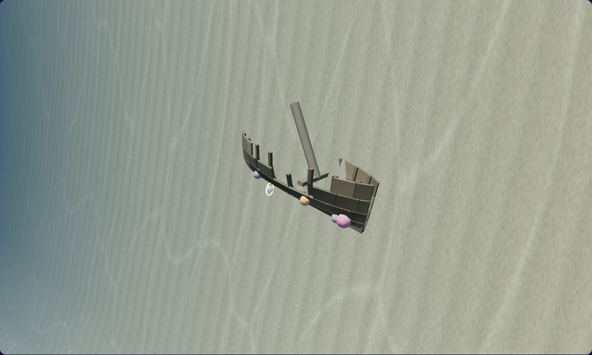
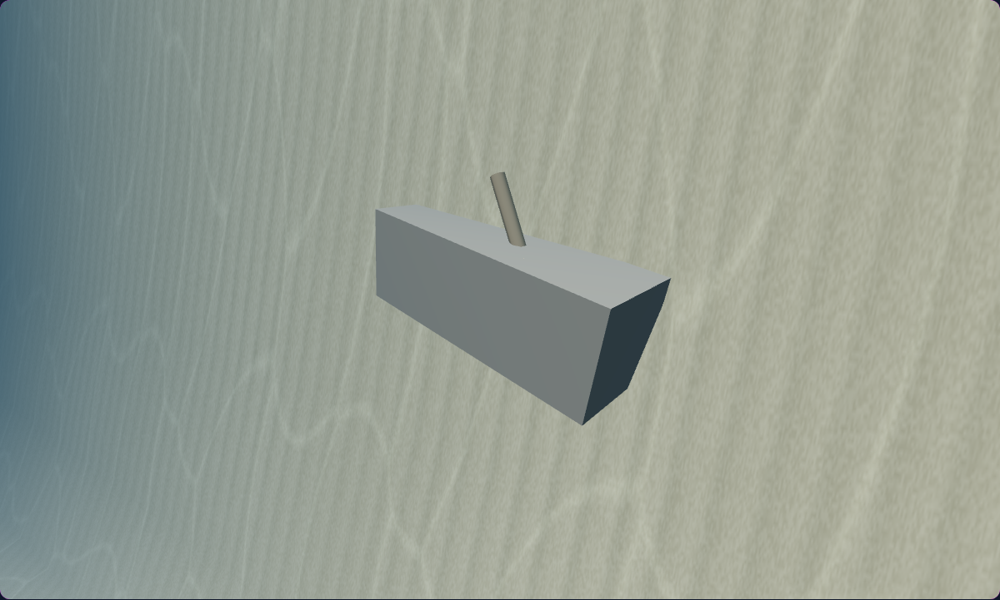

A wreck shaped by the sea.
Explore the wreck's hull, open interior and timber detail. Compare matched captures in the native underwater scene, then see how the changes read from the Hunt camera.


BeforeEnhancedDrag the slider or focus it and use the arrow keys. Home and End reveal either version.
A comparison image could not load. Choose another view or reload the page.
Diagnostic study camera in the actual paused scene, framing the wreck and its surroundings. The camera is explicitly overridden for this comparison.
Hull and silhouette
The three-quarter and bow studies show how the ship's construction reads from outside.
Inside the wreck
The interior and timber studies bring the structure closer for inspection.
In the habitat
The Hunt camera follows the descent to the original pearl beside the wreck's existing drop-off.
Hunt views use the normal native simulator camera. The pearl view follows controlled horizontal placement above the wreck and native Z descent. Wreck studies use explicitly overridden diagnostic cameras in the actual paused scene. Desktop captures use Humboldt squid with balanced quality; phone viewport captures use common octopus with low quality. The native pose comparison excludes the intentionally adjusted coral on the hull. Before capture receipt · Enhanced capture receipt. Changes remain uncommitted.